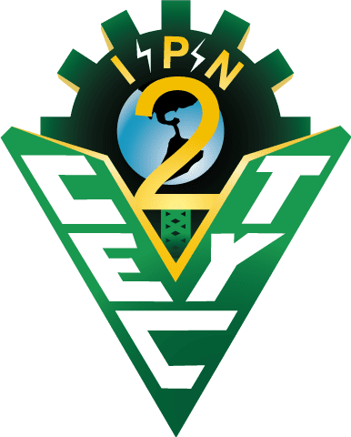

Convocatoria SEP 2026
Convocatoria Medalla “Maestro Rafael Ramírez” por 30 años o más de servicios efectivos
Ingresar aquí…
Enlace para el llenado de la solicitud medalla “Maestro Rafael Ramírez” por 30 años o más de servicios efectivos
Ingresar aquí…
Convocatoria Condecoración “Maestro Altamirano” Por 40 años o más de servicios efectivos
Ingresar aquí…
Enlace para llenado de la solicitud condecoración “Maestro Altamirano” por 40 años o más de servicio
Ingresar aquí…
Instrucciones para llenar la solicitud
- Fecha límite: 7 de Noviembre del 2025
- 1. Leer el instructivo de llenado antes de iniciar.
- 2. El trámite es personal y sólo podrá ser llenado por el interesado.
- 3. Sólo se podrá hacer un registro por persona.
- 4. Antes de finalizar el registro, revisar que los datos contenidos estén correctos.
- 5. Una vez realizado el registro, no se podrá corregir la información.
- 6. Presentar la solicitud en su área de adscripción junto con la documentación correspondiente, conforme a la convocatoria.